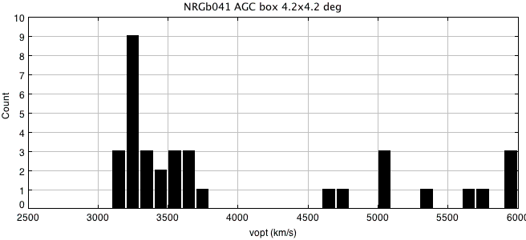
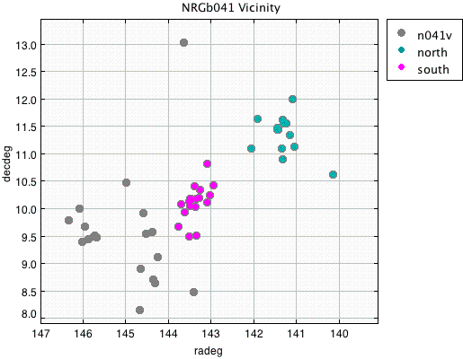
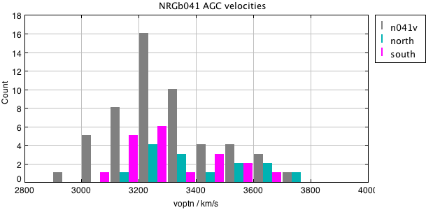
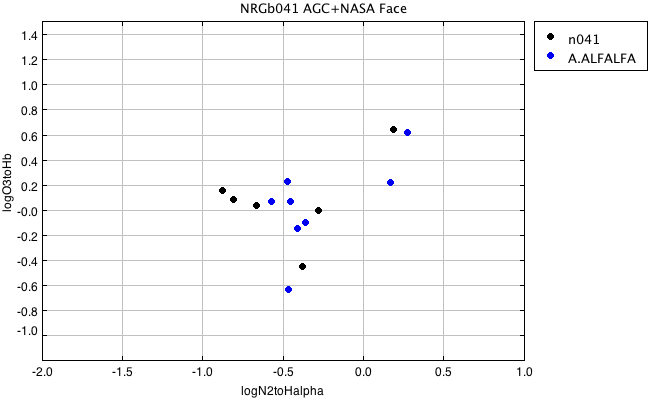

RA,Dec RA,Dec(deg) R(2Mpc) nz nopt cz sig logsig sig logLx dist*
WBL226 NRGb041 0925122+111649 141.3008 11.28028 2.1d 5 6 3616 84 2.32 0.14 <41.50 0.00 55
At this distance, 2 Mpc = 2.1 degrees
So box should be RA > 139.20 & RA < 143.40
Dec > 9.18 & Dec < 13.38
Examine the broader velocity region in AGC in box of 4.2 x 4.2
Make subset from agcnorthminus1.csv:
radeg > 139.20 & radeg < 143.40 & decdeg > 9.18 & decdeg < 13.38

There is a peak between 3000 and 4000, isolated from other objects. Literature velocity and velocity dispersion 3616 +/-208 looks wrong! Examine spatial plot and looks like two structures, one centered near 141.3, another 143.5. Extend box to radeg > 139.20 & radeg < 147 & decdeg > 8 & decdeg < 13.38 Looks like two density enhancements, but velocities are similar for both. Kitt Peak imaging covers both. There appears to be a filamentary structure with lower velocities towards south-east.


Extend original box a bit to cover south density enhancement. May want to enlarge this eventually to include filament: radeg > 139.20 & radeg < 144 & decdeg > 9.18 & decdeg < 13.38 Defining sample, set velocity limits to be 2800 < vhelio < 4000. v=3616 from literature is incorrect. Find 52 AGC objects. Use agc+nsa.v012.mags+lines.appmags+faceHalpha.csv make a subset with: vhelio > 2800 & vhelio < 4000 RA > 139.2 & RA < 144.0 DEC > 9.18 & DEC < 13.38 ba90 > 0.4 So subset is: vhelio > 2800 & vhelio < 4000 & RA > 139.2 & RA < 144 & DEC > 9.18 & Dec < 13.38 & ba90>0.4 Find: n041.agc.nsa.faceHa N = 18 all have ba90>0.4 Use a57+agc+nsa.v012.mags+lines.appmags+faceHalpha.csv n041.a57.nsa.faceHa N = 10 (all code 1,2) Code 1,2 # AGCnr radeg_1 decdeg_1 vopt ABSMAG_i BA90 g-i vhelio logN2/Ha logO3/Hb v21 W50 sintp sn icode 5003 141.06041 11.11056 3480.0 -18.64 0.522 0.922 3428 -0.46 0.21 3447 213 1.06 6.0 2 192125 141.29459 11.53306 3671.0 -16.25 0.774 0.903 3667 -0.49 "" 3639 334 1.28 6.4 2 5021 141.44708 11.425 3783.0 -21.70 0.493 1.256 3754 0.275 0.61 3783 404 4.16 20.0 1 192132 141.91083 11.62083 3153.0 -17.06 0.624 0.714 3209 -0.45 0.06 3207 137 0.8 7.2 1 192133 142.0675 11.07694 3253.0 -15.23 0.511 0.673 3202 "" -0.15 3267 283 1.11 6.0 2 191989 143.08542 10.09972 3200.0 -16.65 0.689 0.472 3212 -0.57 0.06 3212 109 1.66 18.3 1 5092 143.44167 10.15222 3217.0 -22.66 0.747 1.477 3231 0.168 0.21 3200 487 4.04 15.3 1 5093 143.50041 10.02917 3106.0 -19.06 0.434 0.970 3137 -0.35 -0.10 3127 274 1.77 11.6 1 5095 143.51125 9.47861 3071.0 -19.55 0.687 0.863 3048 -0.41 -0.15 3055 222 3.04 24.0 1 190365 143.61084 9.91639 3183.0 -18.68 0.423 1.025 3157 -0.46 -0.64 3111 68 0.34 4.9 2Now construct the BPT diagram of the two subsets:

Choose the subset which has logN2toHalpha < -0.5 : n041.agc.nsa.faceHa.SF.csv N = 4, of which 3 are NOT in ALFALFA n041.agc.nsa.faceHa.SF.notalfalfa.txt # AGCnr radeg decdeg NSAID ABSMAG_i g-i vhelio logN2toHalpha logO3toHb 192349 143.3475 9.48833 51825 -16.730572 0.5762019999999985 3502.5637708960003 -0.8788504937054264 0.14817868103889398 191996 143.36002 10.01139 51867 -16.669851 0.7632580000000004 3264.62095904 -0.663043650314509 0.02812617961061746 192002 143.70834 10.06694 51862 -15.066142 0.6766349999999992 3354.498900432 -0.8099439594434394 0.07975352442685095 None of these are in Becky's list (these would fall in 2nd field, not yet reduced) Becky's list includes 2, of which 0 are in NSA, both are i<70: 190273 141.2425 11.5420 3675 190279 141.317 10.887 3598 Thus there are 2 Ha, no HI, and 3 additional in the NSA, for a total of 5 targets.
| Cluster/group | References |
|---|---|
| WBL 226 = NRGb 041 |